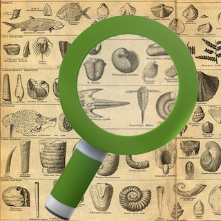

Elasticsearch tools and Compose
Outside of the core Elasticsearch toolset, there’s a world of tools that make the search and analytics database even more useful and accessible. In this article we’ll look at some and show what you do to get them working with Compose’s Elasticsearch deployments. We’ll 
start with a command line tool, move on to a simple search tool and finish with an all purpose client for searching and manipulating your Elasticsearch database…
Es2unix – Command line power
Let us start the tool tour with Es2unix, from the Elasticsearch developers. Es2unix is a version of the Elasticsearch API that you can use from the command line. It doesn’t just make the API calls though, it also converts the returned results into a line-oriented, tabular format like many other Unix tools output. That makes it ideal for integrating Elasticsearch into your awk, grep and sort using shell scripts.
Es2unix will need Java installed, Java 7 at least, and the binary version can be simply downloaded with a curl command and enabled with chmod as per the installation instructions:
curl -s download.elasticsearch.org/es2unix/es >~/bin/es
chmod +x ~/bin/es
Note this assumes you have a bin directory in your $HOME and it’s on your path.
Now, when you run es it’ll assume that Elasticsearch is running locally. When you are using Compose Elasticsearch, that isn’t the case. If you’ve got the /content/images/2014/12/Screenshot-2014-11-20-114454tfrljjradftf.png)It’s a quick way to get a pretty search query front end up locally without wrestling with forming Curl/JSON requests or deploying a full on server.
ESClient
Where Calaca’s great for a super simple search client, you might want something a little more potent for your searching. For that, try ESClientDouble clicking on a result will let you edit the documents that make up the result or you can use the results as a guide for a delete operation. If you set to “Raw JSON” switch in the Configuration tab, you’ll also be able to view the complete raw returned results in the JSON Results tab.
{kind=link}
It’s all rather usefully functional and there’s only one slight problem. If you look at the top of the ESClient page, you’ll see it’s displaying the username and password as part of the URL for the database you are connecting to. Not really ideal that, but the SSH access portal can help out there too. If you set up and activate the tunnel, then you can return the CLUSTER_URL value in the config.js file to http://localhost:9200 and there’ll be no username or password to display on screen.
Wrapping up
We’ve touched on three tools in this article, but more importantly we’ve shown the practical differences between using the HTTP/TCP and SSH access portals on componse. With HTTP/TCP access, there will be usernames and passwords embedded in the URL you use and this will leave any scripts or tools you configure susceptible to shoulder surfers and the like. That said, for occasionally launched tools it is quick and simple.
With the SSH access portal, the configuration and authentication is done when you set up the tunnel in a separate process and the tunnel means you can use Elasticsearch as if the node was installed locally. The downside is you do need to make sure the SSH tunnel is up before you run any command and it may be easier to go through the HTTP/TCP access portal. But then thats why we give you both options at Compose so you can choose what suits you and your applications best.